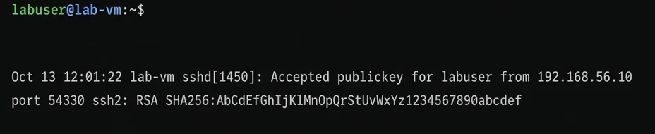
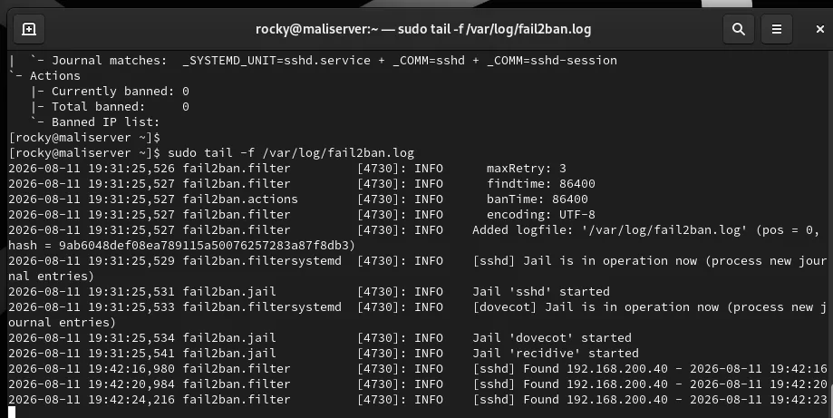
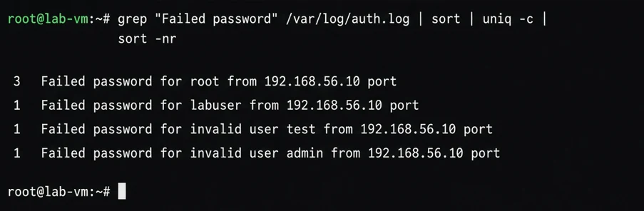

This guide is for learning. Run these commands only on your own lab or servers.
Logs tell you what your server did and who tried to log in. Reading them is a core defensive skill.
journalctl
journalctl -u ssh --since today
journalctl -p err -bauth.log
sudo tail -n 50 /var/log/auth.log
sudo grep "Failed password" /var/log/auth.log | wc -lA large count of failed passwords from many addresses is normal for any public server. It is a good reason to use key login and Fail2ban.
Follow live
sudo tail -f /var/log/auth.logLogs can hold usernames and addresses. Remove them before you post any screenshot.
Know where your system writes
Different distributions store authentication events in different places. Debian and Ubuntu use /var/log/auth.log, while Rocky, Alma and other Red Hat style systems use /var/log/secure. Some minimal Ubuntu installs have no auth.log at all because rsyslog is not installed, and only the systemd journal exists. If a file is missing, query journalctl instead of assuming the logs are empty.
Narrow the time window first
Logs are large, so start by cutting them down. The since and until options accept words and exact times, and the priority option hides noise.
journalctl -u ssh --since "1 hour ago"
journalctl --since "2026-10-13 08:00" --until "2026-10-13 09:00"
journalctl -p warning -bOn Red Hat style systems the SSH unit is named sshd. The -b option limits the output to the current boot, and -b -1 shows the previous one, which helps after a crash.
Learn the common SSH messages
Three phrases cover most of what you will read. Failed password means the account exists and the password was wrong. Invalid user means the name does not exist on your server, which is typical for bots. Accepted publickey or Accepted password means a successful login. A sudden Accepted line from an address you do not know is the one to investigate first.
A successful key login looks like the line below. It shows the user, the source address, the port and the key fingerprint that was used.

Count and rank the sources
A single number is more useful than hundreds of lines. This pipeline lists the addresses with the most failed attempts.
sudo grep "Failed password" /var/log/auth.log | awk '{print $(NF-3)}' | sort | uniq -c | sort -nr | headThe field position can change with the log format, so check one line by eye before you trust the result. The last and lastb commands give a similar view of successful and failed logins.

This is the same idea on my lab VM: filter the failed attempts and rank them. The test and admin names are invalid users, which is what a basic password-guessing attempt looks like.

Following a live event
The screenshot is from my Fail2ban lab, where I followed the Fail2ban log while testing wrong passwords from a client. Each failed attempt created a Found line with the client address, and after the limit was reached the address was banned. Running tail -f in one window while you test in another is the quickest way to connect an action with the log line it creates.
Rotated and compressed logs
Older entries are moved to files like auth.log.1 and then compressed to .gz. A normal grep does not read compressed files, so use zgrep for them, for example zgrep "Failed password" /var/log/auth.log.*.gz.
Habits that help
Check the time zone of the server before comparing events with your notes. Write down the time of each test you run, so you can find it later. Keep logs for a defined period, and protect them, since an attacker who gains access will often try to edit them. Before sharing any screenshot or snippet, hide usernames, public addresses and hostnames.
Practice in your own lab
Make five wrong SSH logins from a second machine, then find them in the journal using a time window. Count the Failed password lines, identify the source address and compare the time with your notes. After that, make one successful login and find the Accepted line. Doing a small investigation like this is the same method you would use in a real incident, only on a smaller scale.
Quick recap
Find the right log for your distribution, narrow the time window, learn the three SSH message types and count the sources before reading single lines. Then follow live events while you test, and remember to check rotated files and to remove private details before you share anything.
Read next
- Beginner’s Guide to Linux Server Hardening & Fail2ban
- SSH Hardening Checklist for a New Linux Server
- Setting Up a BIND9 DNS Server on Rocky Linux (Forward and Reverse Zones)
- Postfix and Dovecot Mail Server: 7 Problems I Hit and How I Fixed Them